每个算法连续运行 800 次候选迭代，记录 0/200/400/600/800。每张快照包含 priority、空间热代理、HPWL 三张 256×256 map；同 Case 色阶固定。
算法为本地 Metropolis SA、投影梯度和在线 REINFORCE。热代理未经 HotSpot 校准。单 seed 轨迹用于实现检查，不能据此判定算法总体优劣。
Case4 的公开 wrapper 板为37×37 mm，芯粒总面积超过板面积（150.77%）。保留原配置的五检查点作为输入不可行性诊断，不纳入合法布局性能比较。其余运行也逐一报告实际重叠与合法性。
6 chiplets | area utilization 61.22%
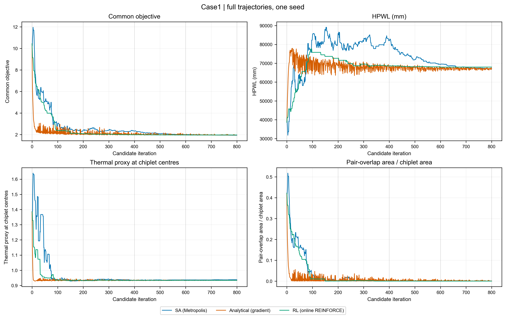
| 算法 | 最终HPWL/mm | 重叠率 | 合法 |
|---|---|---|---|
| SA (Metropolis) | 67034.053 | 0.000000 | True |
| Analytical (gradient) | 67188.395 | 0.000566 | False |
| RL (online REINFORCE) | 67980.937 | 0.000000 | True |
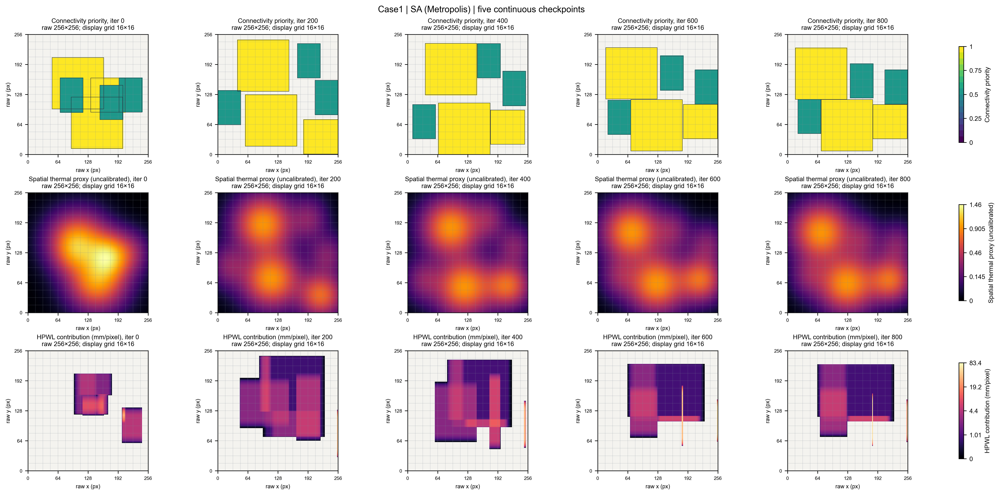
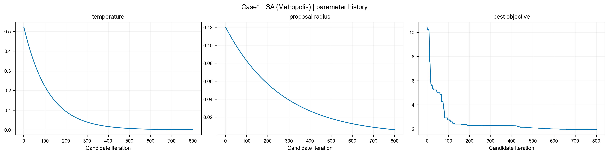
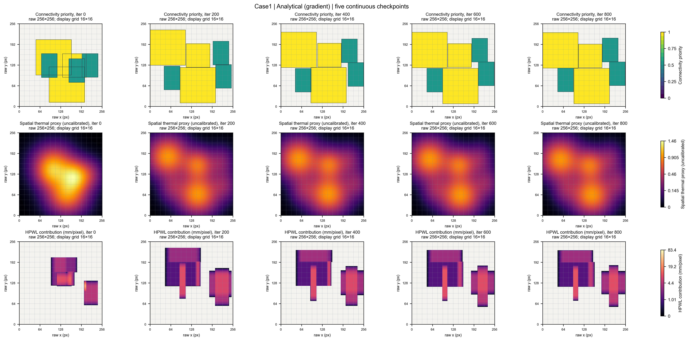
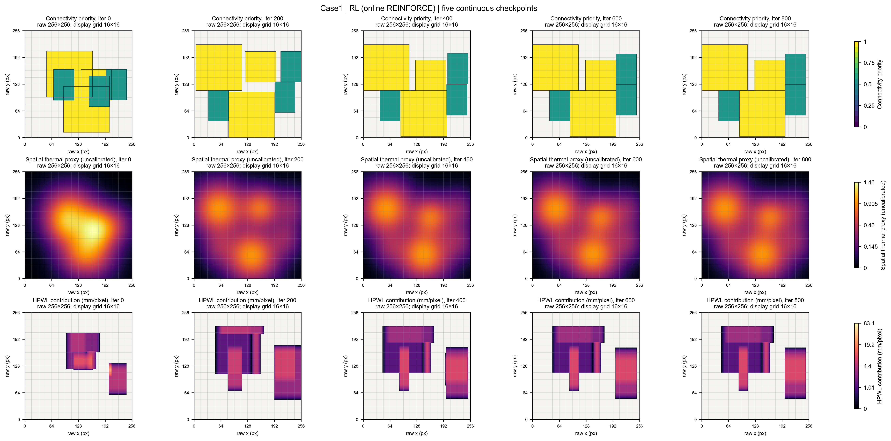
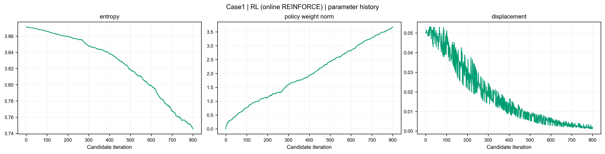
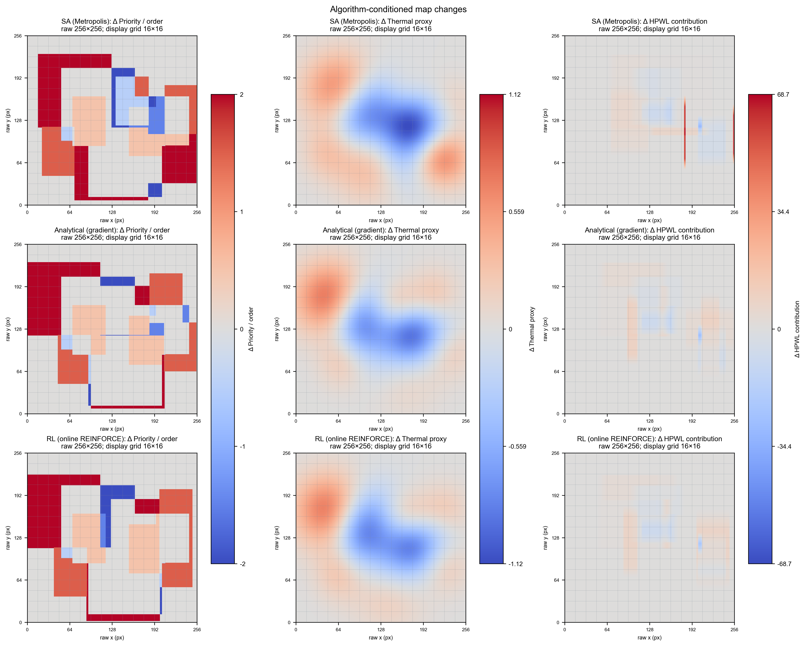
6 chiplets | area utilization 98.37%
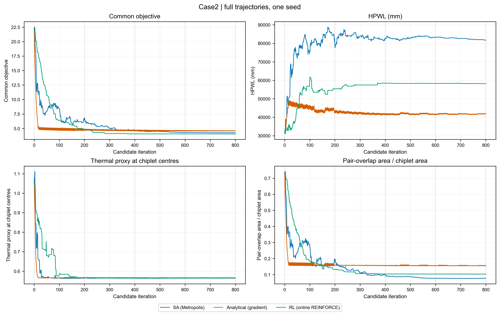
| 算法 | 最终HPWL/mm | 重叠率 | 合法 |
|---|---|---|---|
| SA (Metropolis) | 81707.578 | 0.077108 | False |
| Analytical (gradient) | 41960.563 | 0.157191 | False |
| RL (online REINFORCE) | 58211.957 | 0.103475 | False |
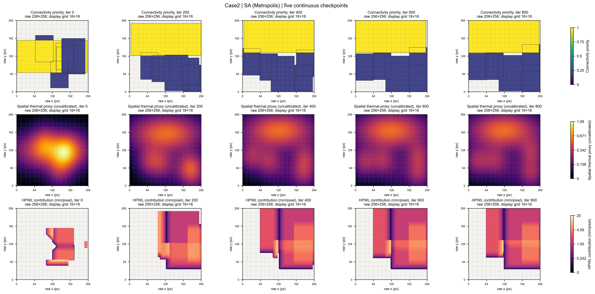
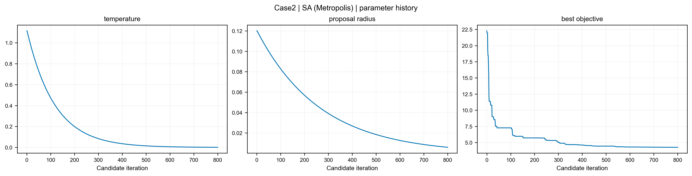
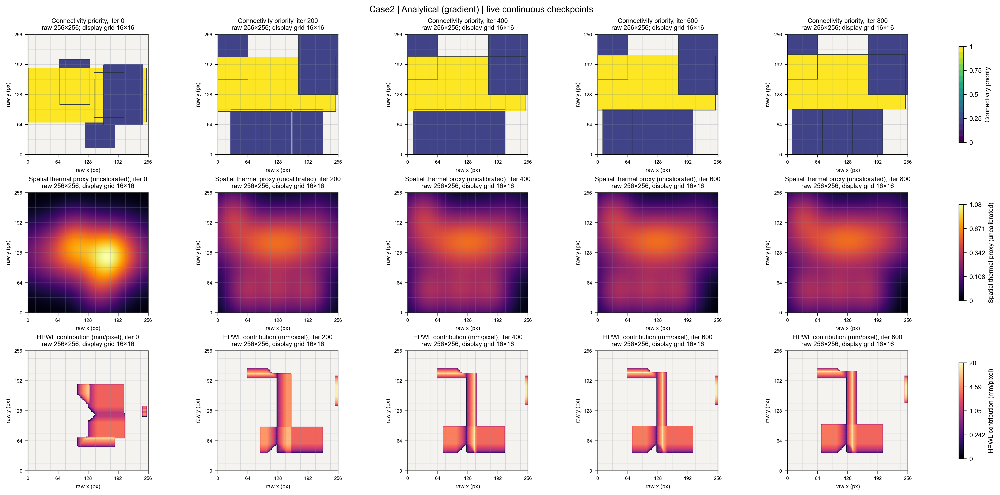
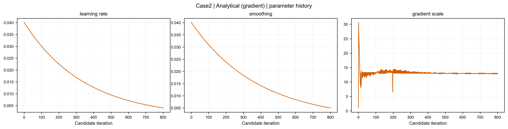
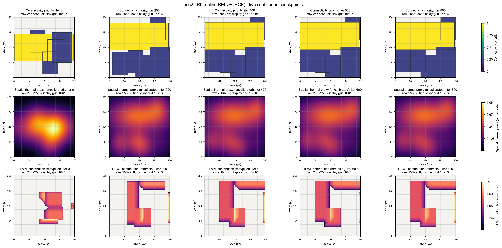
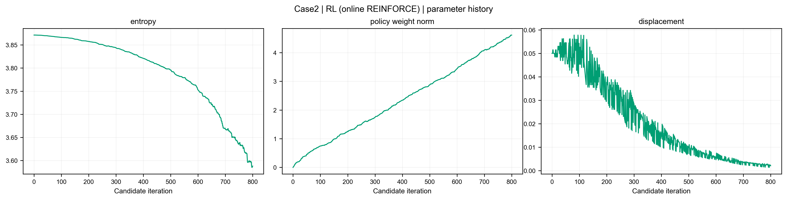
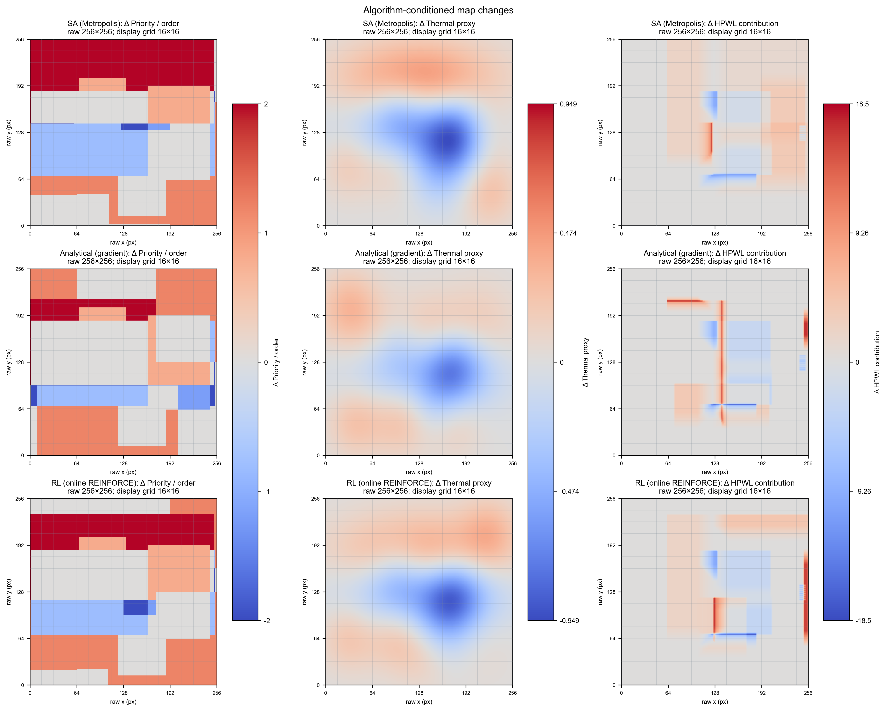
8 chiplets | area utilization 40.24%
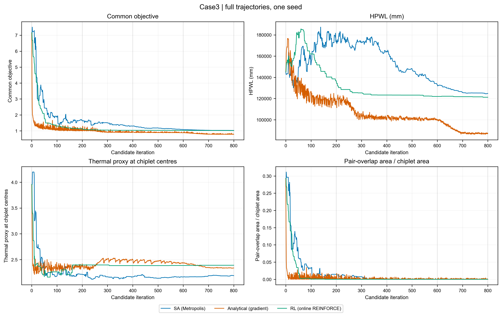
| 算法 | 最终HPWL/mm | 重叠率 | 合法 |
|---|---|---|---|
| SA (Metropolis) | 124811.840 | 0.000015 | False |
| Analytical (gradient) | 87314.656 | 0.000045 | False |
| RL (online REINFORCE) | 121245.577 | 0.000000 | True |
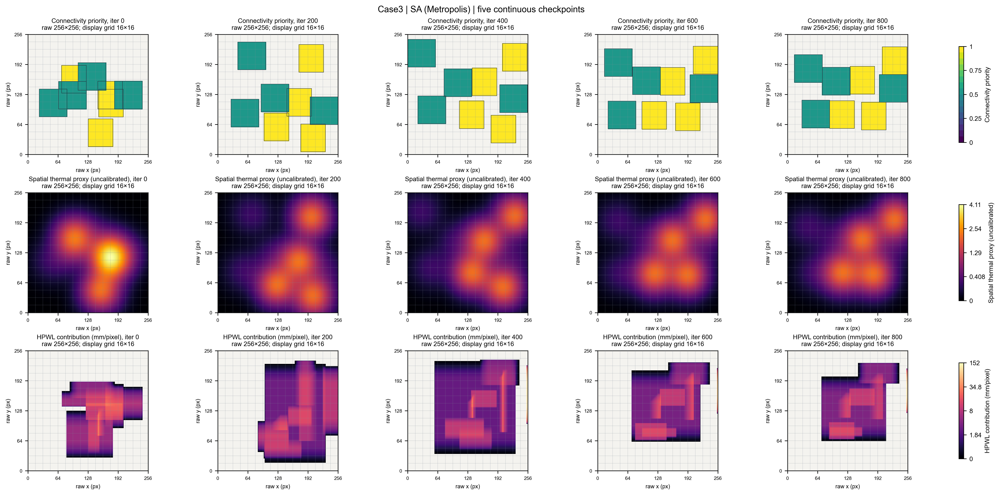
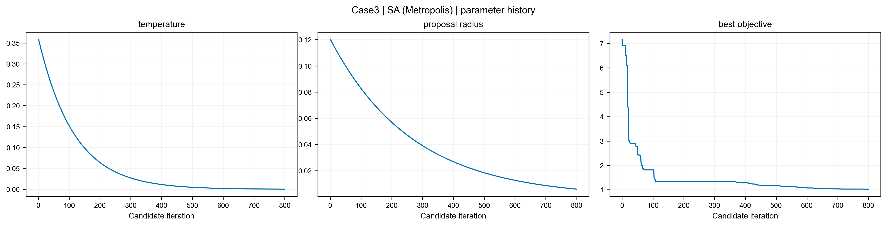
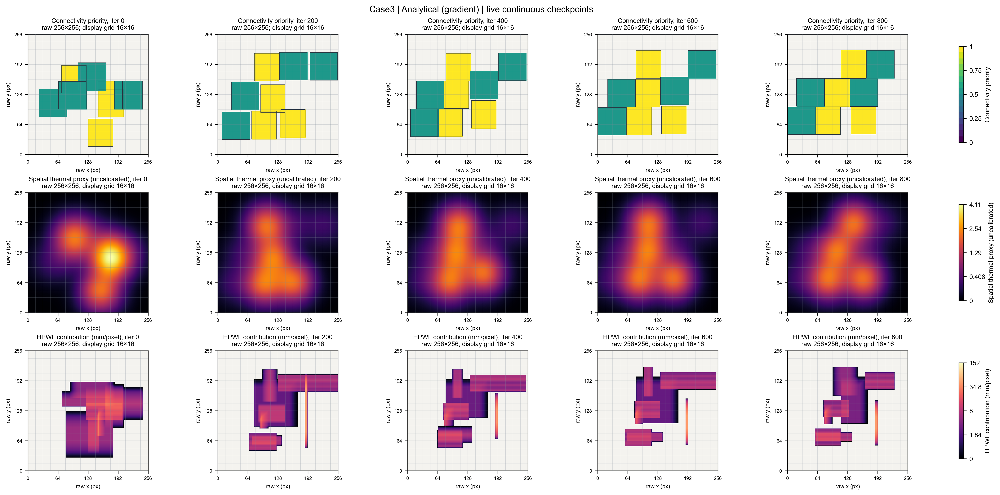
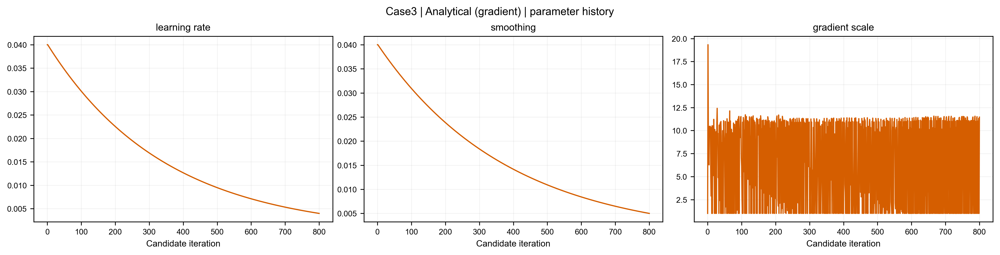
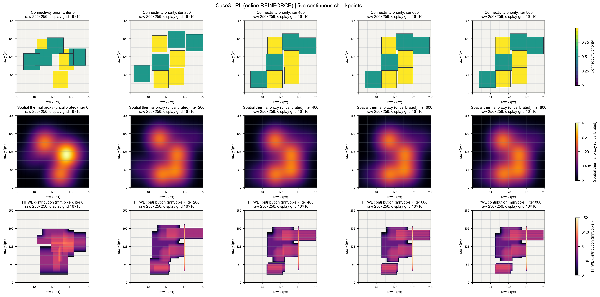
11 chiplets | area utilization 150.77%
| 算法 | 最终HPWL/mm | 重叠率 | 合法 |
|---|---|---|---|
| SA (Metropolis) | 152227.577 | 0.440225 | False |
| Analytical (gradient) | 148851.856 | 0.381975 | False |
| RL (online REINFORCE) | 144075.860 | 0.347018 | False |
12 chiplets | area utilization 27.30%
| 算法 | 最终HPWL/mm | 重叠率 | 合法 |
|---|---|---|---|
| SA (Metropolis) | 168996.673 | 0.000049 | False |
| Analytical (gradient) | 130126.963 | 0.000000 | True |
| RL (online REINFORCE) | 169107.472 | 0.000000 | True |
20 chiplets | area utilization 47.44%
| 算法 | 最终HPWL/mm | 重叠率 | 合法 |
|---|---|---|---|
| SA (Metropolis) | 178386.715 | 0.000096 | False |
| Analytical (gradient) | 134575.850 | 0.000124 | False |
| RL (online REINFORCE) | 153514.360 | 0.000959 | False |
28 chiplets | area utilization 46.56%
| 算法 | 最终HPWL/mm | 重叠率 | 合法 |
|---|---|---|---|
| SA (Metropolis) | 47619.646 | 0.051616 | False |
| Analytical (gradient) | 35843.854 | 0.000000 | True |
| RL (online REINFORCE) | 37129.222 | 0.003958 | False |
36 chiplets | area utilization 41.64%
| 算法 | 最终HPWL/mm | 重叠率 | 合法 |
|---|---|---|---|
| SA (Metropolis) | 38830.415 | 0.003793 | False |
| Analytical (gradient) | 24248.717 | 0.000039 | False |
| RL (online REINFORCE) | 30971.336 | 0.002025 | False |
44 chiplets | area utilization 55.88%
| 算法 | 最终HPWL/mm | 重叠率 | 合法 |
|---|---|---|---|
| SA (Metropolis) | 252410.423 | 0.032554 | False |
| Analytical (gradient) | 223679.600 | 0.000416 | False |
| RL (online REINFORCE) | 248132.775 | 0.019507 | False |
61 chiplets | area utilization 50.79%
| 算法 | 最终HPWL/mm | 重叠率 | 合法 |
|---|---|---|---|
| SA (Metropolis) | 149631.356 | 0.046305 | False |
| Analytical (gradient) | 127016.511 | 0.000795 | False |
| RL (online REINFORCE) | 148325.865 | 0.029426 | False |